Distribuciones de probabilidad: variables discretas
Estadística Básica | 2026
Hoja de ruta
- Variables aleatorias: generalidades
- Función de probabilidad y distribución de probabilidades
- Distribución de Bernoulli
- Distribución binomial
- Distribución hipergeométrica
- Distribución Poisson
\[ \newcommand{\LI}{\text{LI}} \newcommand{\LS}{\text{LS}} \newcommand{\MC}{\text{MC}} \]
Generalidades
Variables aleatorias
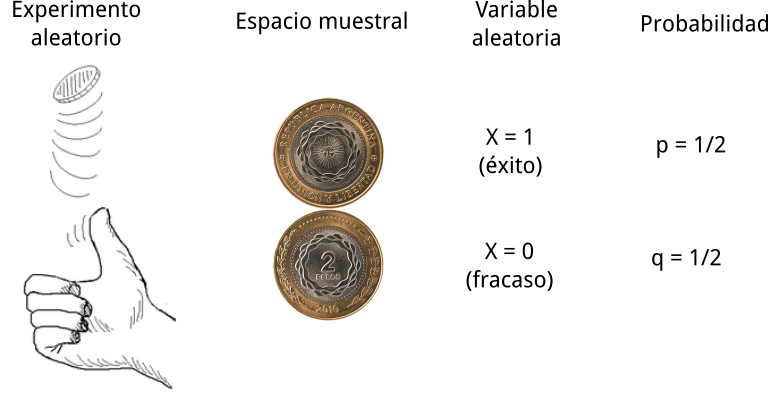
Los resultados o eventos de un experimento aleatorio pueden ser cualitativos o cuantitativos (discretos o continuos) los cuales se asocian a variables aleatorias (VA)
Variables porque sus valores no son todos iguales (hay variación)
aleatorias por que no se puede predecir con certeza qué valor va a tomar, pero se puede asignar una probabilidad.
Tipos de variables aleatorias
Variable aleatoria cualitativa
Cuando los posibles valores son categóricos, generalmente finitos y típicamente pocos (a veces codificados como números)
Ejemplo
El sexo de un insecto (variable) extraído al azar de una planta infestada (experimento) puede ser macho o hembra
Variable aleatoria discreta (VAD)
Cuando las observaciones pueden ser números enteros finitos o infinitos pero contables
Ejemplo
El número de bichos blancos (variable) en una muestra de suelo obtenida al azar (experimento) puede ser 0, 1, 2, …
Variable aleatoria continua (VAC)
Cuando las observaciones pueden ser cualquier número del intervalo de números reales
Ejemplo
La altura de una planta (variable) seleccionada al azar de un cultivo de soja (experimento) puede ser en cm 30, 45, 52.1, …
Distribución de probabilidades
Cómo están distribuidas las probabilidades de los posibles valores de una variable aleatoria. Se puede representar de manera gráfica, tabular o por fórmula
Ejemplo
¿Cuál es la probabilidad de que una vaca para 2 veces seguidas una ternera?
\(X\) = # de terneras en dos partos consecutivos
Si
M= 0 yH= 1, los posibles valores de \(X\) son 0 (MM), 1 (MHoHM) y 2 (HH)\(p = P(\text{ternera}) = 0.5\)
\(P(\text{MyM}) = P(\text{HyH}) = 0.5\times 0.5 = 0.25\)
\(\begin{align} P(\text{MyH o HyM}) &= P(\text{MyH}) + P(\text{HyM}) \\ &= 0.25 + 0.25 = 0.5 \end{align}\)
Distribución de probabilidades: tabla, fórmula y gráfico
De forma tabular
| Sexo | \(x\) | \(P(X = x)\) |
|---|---|---|
| MM | 0 | 0.25 |
| MH o HM | 1 | 0.50 |
| HH | 2 | 0.25 |
Fórmula
\[P(X = x) = f(x) = \binom{2}{x} p^x q^{2-x}\]
o gráfica…
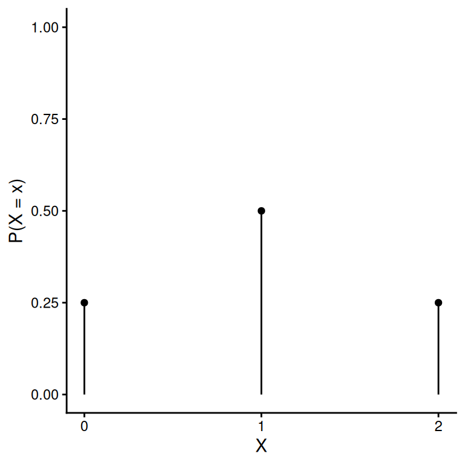
Función de probabilidad
Función de probabilidad \(f(X)\) aquella que asigna o distribuye probabilidades a los posibles valores de una variable aleatoria
\[f(X) = P(X = x_i) = p_i \quad \text{para todo i}\]
Hay familias de distribuciones. Cada distribución se caracteriza por sus parámetros
Ejemplo
El lanzamiento de una moneda pertenece a una familia Bernoulli donde \(f(X) = p\)
Si \(p = 0.5\) (moneda legal) \[f(X) = \begin{cases} 0.5 \quad \text{si X = 0} \\ 0.5 \quad \text{si X = 1} \end{cases}\]
Si \(p = 0.7\) (moneda no legal)
\[f(X) = \begin{cases} 0.3 \quad \text{si X = 0} \\ 0.7 \quad \text{si X = 1} \end{cases}\]
Características de las probabilidades de VAD
Las probabilidades asociadas con cada valor de \(X\) es un número entre 0 y 1.
La suma de las probabilidades de todos los valores de \(X\) es 1, \(\sum P(x_i) = \sum p_i = 1\)
Las probabilidades son aditivas: \(P(X = 1 \text{ o } X = 2) = P(1) + P(2)\)
Función de distribución acumulada
Función de distribución acumulada \(F(X)\) aquella que para cada valor de \(X\) asigna la probabilidad de que el valor observado sea \(x_k\) o un número menor que \(x_k\)
\[F(X) = P(X \le x_k) = \sum_i^k P(x_i)\]
Importante
Para cualquier número \(a\)
\(P(X \le a) = F(X = a)\)
\(P(X < a) = P(X \le a-1) = F(X = a-1)\)
\(P(X \ge a) = 1 - P(X < a) = 1 - F(X = a-1)\)
\(P(X > a) = 1 - P(X \le a) = 1 - F(X = a)\)
Función de distribución acumulada: ejemplos
\(P(3 \le X \le 7)\)
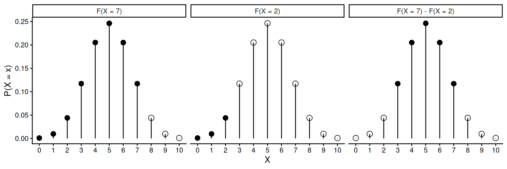
\(P(3 < X \le 7)\)
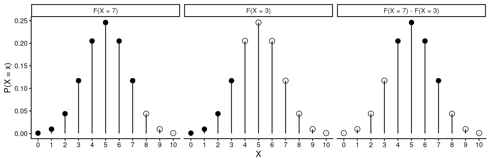
Valores esperados: esperanza
La esperanza matemática \(E(X)\) es el valor esperado de la variable aleatoria \(X\)
\[E(X) = \mu_X = \sum x_i p_i\]
Ejemplo
Tenemos una variable aleatoria que tiene la siguiente distribución de probabilidades, ¿cuál es la esperanza?
| i | 1 | 2 | 3 | 4 | 5 |
|---|---|---|---|---|---|
| \(X_i\) | 0 | 1 | 2 | 3 | 4 |
| \(p_i\) | 0.05 | 0.15 | 0.35 | 0.25 | 0.2 |
\[\begin{align} E(X) &= \sum x_ip_i = \\ &= 0 \cdot 0.05 + 1 \cdot 0.15 + 2 \cdot 0.35 + 3 \cdot 0.25 + 4 \cdot 0.2 = \\ &= 2.4 \end{align}\]
Propiedades de la esperanza
La \(E\) de una constante es igual a la constante, \[E(a) = a\]
La \(E\) de la suma (o resta) de una constante y una variable aleatoria es la constante más (menos) la esperanza de la variable \[E(a \pm X) = E(a) \pm E(X) = a \pm E(X)\]
La \(E\) del producto de una constante y una variable aleatoria es el producto de la constante y la esperanza de la variable, \[E(aX) = E(a) E(X) = a E(X)\]
La \(E\) de la suma (o resta) de dos variables aleatorias independientes es la suma (o resta) de sus esperanzas \[E(X \pm Y ) = E(X) \pm E(Y)\]
Varianza
La varianza de una variable aleatoria \(V(X)\) es el valor esperado de los desvíos cuadráticos de los valores de una variable respecto a su esperanza (media). El desvío \(D(X) = +\sqrt{V(X)}\).
\[V(X) = E\left\{\left[ x_i - E(X) \right]^2\right\} = \sum (x_i - \mu_X)^2 P(x_i) \\ V(X) = E(X^2) - \left[E(X)\right]^2 = \sum x_i^2 p(x_i) - \mu_X^2\]
Ejemplo
¿Cuál es la varianza de la variable aleatoria del ejemplo anterior? \(E(X) = \mu_X = 2.4\)
| i | 1 | 2 | 3 | 4 | 5 |
|---|---|---|---|---|---|
| \(X_i\) | 0 | 1 | 2 | 3 | 4 |
| \(p_i\) | 0.05 | 0.15 | 0.35 | 0.25 | 0.2 |
\[\begin{align} V(X) &= \sum \left[x_i-E(X) \right]^2p_i = \\ &= (0 - 2.4)^2 \cdot 0.05 + (1 - 2.4)^2 \cdot 0.15 + \dots + (4 - 2.4)^2 \cdot 0.2 = \\ &= 1.24 \end{align}\]
Propiedades de la varianza
La varianza de una constante es igual a 0 \[V(a) = 0\]
La varianza de la suma (o resta) de una constante y una variable aleatoria es la varianza de la variable \[V(a \pm X) = 0 + V(X) = V(X)\]
La varianza del producto de una constante y una variable aleatoria es el producto del cuadrado de la constante y la varianza de la variable \[\begin{align} V(aX) &= E(a^2X^2) - E(aX)^2 = E(a^2)E(X^2) - E(a)^2E(X)^2 \\ &= a^2 E(X^2) - a^2E(X)^2 = a^2[E(X^2) - E(X)^2] \\ &= a^2V(X) \end{align}\]
La varianza de la suma (o resta) de dos variables aleatorias independientes es la suma de sus varianzas \[V(X \pm Y ) = V(X) + V(Y)\]
Distribución Bernoulli
Características del proceso de Bernoulli
Experimento aleatorio sin repetición ( \(n = 1\) )
Dos posibles sucesos o resultados mutuamente excluyentes: éxito (\(X = 1\)) o fracaso (\(X = 0\))
Probabilidades:
- \(P(\text{éxito}) = p\)
- \(P(\text{fracaso}) = 1 - p = q\)
Ejemplo
- Lanzar una moneda y que el resultado sea cara ( \(p = 0.5\) )
- Elegir un animal enfermo en un lote donde el 20% está sano ( \(p = 1 – q = 0.8\) ).
Si \(X\) es una VAD asociada a un proceso Bernoulli con probabilidad \(p\), su distribución de probabilidades es:
| Evento | \(x_i\) | \(P(x_i)\) | \(x_i \cdot P(x_i)\) |
|---|---|---|---|
| éxito | 1 | \(p\) | \(1 \cdot p\) |
| fracaso | 0 | \(q\) | \(0 \cdot q\) |
| \(\Sigma\) | 1 | 1 | \(p\) |
Esperanza
\[E(X) = \sum x_i \cdot P(x_i) = 1p + 0q = p\]
Varianza
\[V(X) = E\left[ X - E(X)\right]^2 = E(X^2) - E(X)^2 \\ = \sum x_i^2 \cdot P(x_i) - p^2 = p - p^2 = p(1-p) = pq\]
Distribución Binomial
Características del proceso binomial
Experimentos aleatorios e independientes de tipo Bernoulli repetidos \(n\) veces
\(n\) es un número fijo y finito
Cada experimento tiene dos posibles resultados mutuamente excluyentes: éxito ( \(Y = 1\) ) o fracaso ( \(Y = 0\) )
La probabilidad de éxito en cada experimento es constante e igual a \(p\)
La variable es número de éxitos: \(X = \sum Y_i\)
Ejemplo
En un tambo se tomó una muestra al azar de 5 vacas ( \(n = 5\) ) y se determinó cuáles estaban preñadas (éxito = 1) o vacías (fracaso = 0) mediante tacto rectal.
| Vaca | \(Y_i\) |
|---|---|
| 1 | 1 |
| 2 | 0 |
| 3 | 1 |
| 4 | 1 |
| 5 | 0 |
| \(X = \sum Y_i\) | 3 |
El resultado de cada tacto es una VAD de tipo Bernoulli denominada \(Y\)
\(X\) es una VAD con distribución binomial que representa el número de vacas preñadas en muestras de 5 vacas
Los posibles valores son \(X = \{0, 1, 2, 3, 4, 5\}\)
Distribución de probabilidades
Si \(X\) es una VAD que registra el número de éxitos en una muestra tamaño \(n\) y probabilidad \(p\), su distribución de probabilidades es Binomial.
\[X \sim \text{Binom}(n, p)\]
Ejemplo
Si en el rodeo anterior, 60 de cada 100 vacas en ordeño están preñadas ( \(p = 0.6\) ). ¿Cuál es la distribución de probabilidades para los distintos valores que puede tomar \(X\) en muestras de \(n = 5\)?
\[\begin{align} P(X = 0) &= P(Y_1 = 0) \cdot P(Y_2 = 0) \cdot P(Y_3 = 0) \cdot P(Y_4 = 0) \cdot P(Y_5 = 0) \\ &= q \cdot q \cdot q \cdot q \cdot q = q^5 = 0.4^5 = 0.01024 \\ \\ P(X = 1) &= P(Y_1 = 1) \cdot P(Y_2 = 0) \cdot P(Y_3 = 0) \cdot P(Y_4 = 0) \cdot P(Y_5 = 0) \\ &+ \dots + P(Y_1 = 0) \cdot P(Y_2 = 0) \cdot P(Y_3 = 0) \cdot P(Y_4 = 0) \cdot P(Y_5 = 1) \\ &= p \cdot q \cdot q \cdot q \cdot q + \dots + q \cdot q \cdot q \cdot q \cdot p \\ &= 5 \cdot p \cdot q^4 = 5 \cdot 0.6 \cdot 0.4^4 = 0.0768 \\ &\cdots \\ P(X = 5) &= P(Y_1 = 1) \cdot P(Y_2 = 1) \cdot P(Y_3 = 1) \cdot P(Y_4 = 1) \cdot P(Y_5 = 1) \\ &= p \cdot p \cdot p \cdot p \cdot p = p^5 = 0.6^5 = 0.0777 \end{align}\]
Distribución de probabilidades: tabla y gráfico
Ejemplo (cont.)
| \(x_i\) | \(P(X = x_i)\) |
|---|---|
| 0 | \(q^5 = 0.01024\) |
| 1 | \(5 \cdot p \cdot q^4 = 0.0768\) |
| 2 | \(10 \cdot p^2 \cdot q^3 = 0.2304\) |
| 3 | \(10 \cdot p^3 \cdot q^2 = 0.3456\) |
| 4 | \(5 \cdot p^4 \cdot q = 0.2592\) |
| 5 | \(p^5 = 0.07776\) |
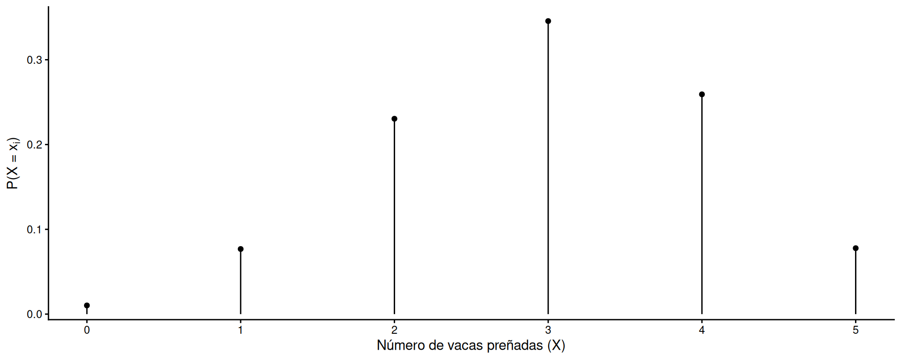
- Si \(p = q = 0.5\), la distribución es simétrica
- Si \(p > q\) es asimétrica a izquierda y si \(p < q\) asimétrica a derecha
- Si \(n \rightarrow \infty\), tiende a ser simétrica
Funciones de probabilidad
Función de (masa de) probabilidad
\[P(X = x) = {n \choose x} p^{x} q^{n-x}\]
Función de distribución (acumulada)…
\[P(X \le x_k) = \sum_{i = 0}^{x_k} {n \choose i} p^{i} q^{n-i}\]
Esperanza
\[\begin{align} E(X) = \sum^n E(Y_i) &= E(Y_1) + E(Y_2) + \cdots + E(Y_n) \\ &= p + p + \cdots + p = np \end{align}\]
Varianza
\[\begin{align} V(X) = \sum^n V(Y_i) &= V(Y_1) + V(Y_2) + \cdots + V(Y_n) \\ &= pq + pq + \cdots + pq = npq \end{align}\]
… y en R?
Note
En R, familia *binom()
dbinom(x, size, prob): \(P(X = x)\)
pbinom(q, size, prob, lower.tail): \(P(X \le x)\)
qbinom(p, size, prob, lower.tail): cuantil para una probabilidad acumulada \(p\)
rbinom(n, size, prob): \(n\) valores aleatorios
size = tamaño de muestra, prob = probabilidad de éxito, lower.tail = TRUE para \(P(X \le x)\) (por defecto) o FALSE para \(P(X > x)\)
Distribución Hipergeométrica
Características del proceso hipergeométrico
Experimentos aleatorios de tipo Bernoulli repetidos \(n\) veces
\(n\) es un número fijo y finito
Cada experimento tiene dos posibles resultados: éxito (1) o fracaso (0)
Muestreo sin reposición: la probabilidad de éxito no es constante, por lo tanto los experimentos son dependientes
Ejemplo
En un lote de 20 vacas en ordeño hay 5 que son de primera parición. El número de vacas primíparas en una muestra de 4 vacas es:
| Vaca | \(Y_i\) |
|---|---|
| 1 | 1 |
| 2 | 0 |
| 3 | 0 |
| 4 | 1 |
| —————- | ——– |
| \(X = \sum Y_i\) | 2 |
El resultado de cada vaca elegida es una VAD de tipo Bernoulli denominada \(Y\)
El número de vacas primíparas en muestras de 4 vacas es una VAD con distribución hipergeométrica porque los ensayos Bernoulli no son independientes.
Los posibles valores son \(X = \{0, 1, 2, 3, 4\}\)
Distribución de probabilidades
Si \(X\) es una VAD que registra el número de éxitos en una muestra de tamaño \(n\) extraída sin reposición de una población \(N\) con \(N_1\) número de éxitos, su distribución de probabilidades es Hipergeométrica
\[X \sim \text{Hiper}(n, N, N_1)\]
Ejemplo
En el ejemplo anterior, \(N = 20\), \(N_1 = 5\) y la muestra es \(n = 4\). ¿Cómo se calculan esas probabilidades? Por ejemplo, para \(x=1\)…
Formas de realizar el muestreo \(\binom{20}{4} = 4845\)
Formas de elegir 1 vaca primeriza \(\binom{5}{1} = 5\)
Formas de elegir 3 vacas no primerizas \(\binom{15}{3} = 455\)
\[P(X = 1) = \dfrac{{5 \choose 1} {15 \choose 3}}{{20 \choose 4}} = \dfrac{2275}{4845} = 0.4695562\]
Distribución de probabilidades: tabla y gráfico
Ejemplo (cont.)
| \(x_i\) | \(P(x_i)\) |
|---|---|
| 0 | \({5 \choose 0} {15 \choose 4} \div {20 \choose 4} = 0.2817337\) |
| 1 | \({5 \choose 1} {15 \choose 3} \div {20 \choose 4} = 0.4695562\) |
| 2 | \({5 \choose 2} {15 \choose 2} \div {20 \choose 4} = 0.2167183\) |
| 3 | \({5 \choose 3} {15 \choose 1} \div {20 \choose 4} = 0.0309598\) |
| 4 | \({5 \choose 4} {15 \choose 0} \div {20 \choose 4} = 0.001032\) |
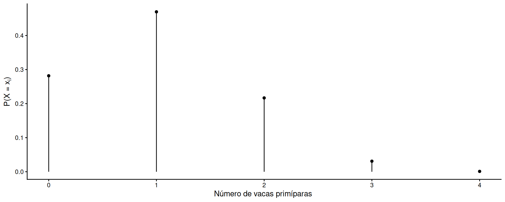
- Si \(N\) es grande comparado con \(n\) (\(n < 0.05N\)), no influye que sea sin reposición y puede aproximarse por Binomial con \(p = N_1/N\)
- Si \(p > q\) es asimétrica a izquierda y si \(p < q\) asimétrica a derecha
- Si \(n \rightarrow \infty\), la distribución se hace simétrica
Funciones de probabilidad
Función de (masa de) probabilidad
\[P(X = x) = \dfrac{{N_1 \choose x} {N-N_1 \choose n-x}}{{N \choose n}}\]
Función de distribución (acumulada)…
\[P(X \le x) = \sum_{i = 0}^{x_k} \dfrac{{N_1 \choose i} {N-N_1 \choose n-i}}{{N \choose n}}\]
Esperanza
\[ E(X) = n \cdot \dfrac{N_1}{N} = np\]
Varianza
\[V(X) = n \cdot \dfrac{N_1}{N} \cdot \dfrac{N-N_1}{N} \cdot \dfrac{N - n}{N - 1} = npq \dfrac{N - n}{N - 1}\]
… y en R?
Note
En R, familia *hyper()
dhyper(x, m, n, k): \(P(X = x)\)
phyper(q, m, n, k, lower.tail): \(P(X \le x)\)
qhyper(p, m, n, k, lower.tail): cuantil para una probabilidad acumulada \(p\)
rhyper(nn, m, n, k):nnvalores aleatorios
m = éxitos en la población, n = fracasos en la población, k = tamaño de muestra, lower.tail = TRUE para \(P(X \le x)\) (por defecto) o FALSE para \(P(X > x)\)
Distribución Poisson
Características del proceso Poisson
Experimentos aleatorios de tipo Bernoulli distribuidos en el tiempo o espacio
Cada experimento tiene dos posibles resultados: éxito (1) o fracaso (0)
\(n\) es fijo y infinito o muy grande (es el límite de la binomial)
\(p\) es constante y pequeña
Ejemplo
Distribución espacial de larvas de bicho blanco en una hectárea de un lote agrícola.
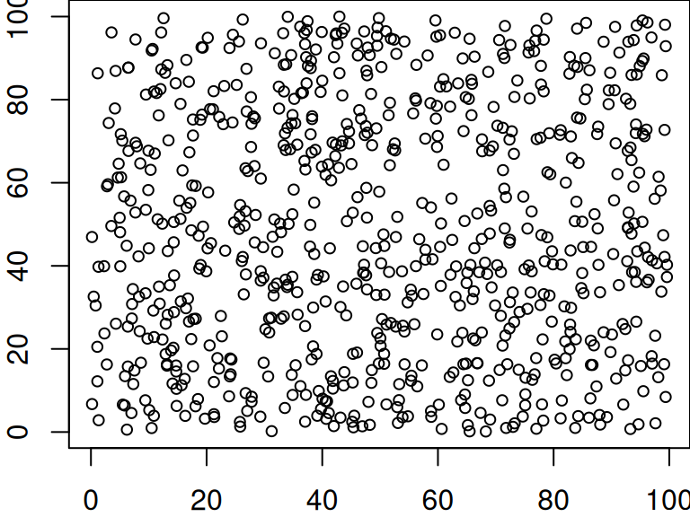
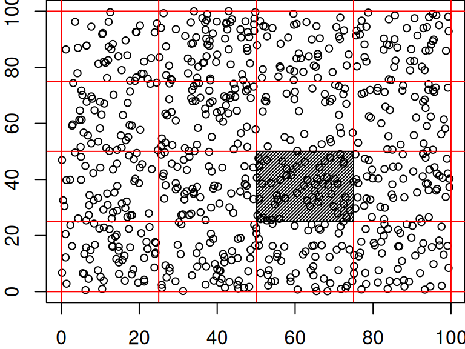
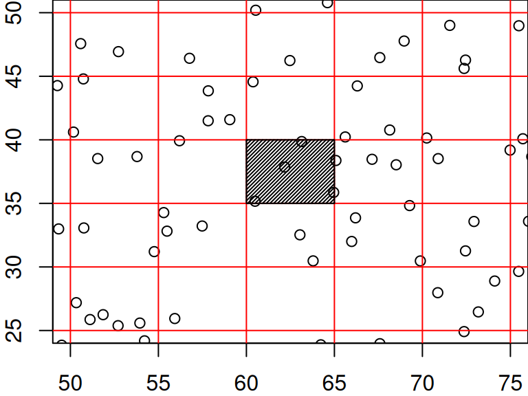
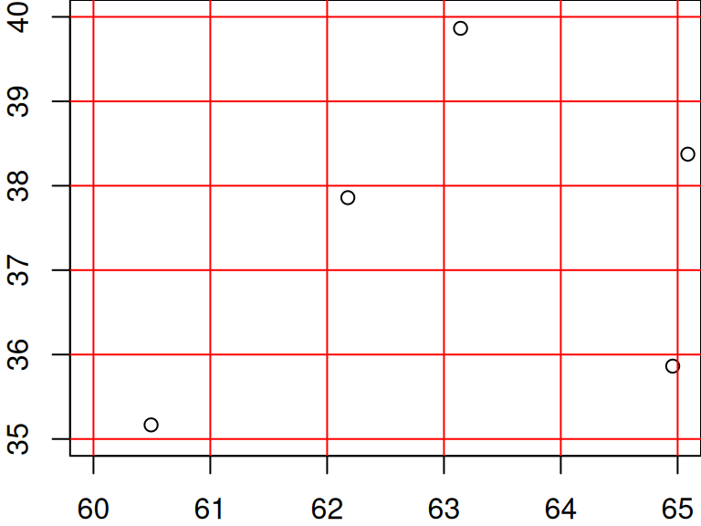
Distribución de probabilidades
Si \(X\) es una VAD que registra el número de éxitos \(\lambda\) por unidad de tiempo o espacio, su distribución de probabilidades es Poisson
\[ X \sim \text{Poiss}(\lambda)\]
Ejemplo
¿Qué probabilidad hay de encontrar 4 bichos blancos en una muestra de 1 m2 si hay 2 bichos blancos m-2?
La fórmula de Poisson deriva del límite de la Binomial (\(n \rightarrow \infty\)):
\[P(X = 4) = \dfrac{\lambda^4 e^{-\lambda}}{4!} = 0.0902235\]
Distribución de probabilidades: tabla y gráfico
Ejemplo (cont.)
| \(x_i\) | \(P(x_i)\) |
|---|---|
| 0 | \((2^0 e^{-2})\div{0!} = 0.1353353\) |
| 1 | \((2^1 e^{-2})\div{1!} = 0.2706706\) |
| 2 | \((2^2 e^{-2})\div{2!} = 0.2706706\) |
| 3 | \((2^3 e^{-2})\div{3!} = 0.180447\) |
| 4 | \((2^4 e^{-2})\div{4!} = 0.0902235\) |
| 5 | \((2^5 e^{-2})\div{5!} = 0.0360894\) |
| \(\dots\) | \(\dots\) |
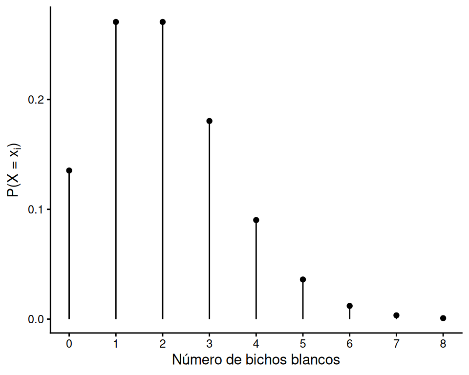
- La distribución es asimétrica a derecha, pero se hace simétrica si \(\lambda\) crece
Funciones de probabilidad
Función de (masa de) probabilidad
\[P(X = x) = \dfrac{\lambda^x e^{-\lambda}}{x!}\]
Función de distribución (acumulada)…
\[P(X \le x) = \sum_{i = 0}^x \dfrac{\lambda^i e^{-\lambda}}{i!}\]
Esperanza
\[E(X) = n \cdot p = \lambda\]
Varianza
\[V(X) = n \cdot p = \lambda\]
… y en R?
Note
En R, familia *pois()
dpois(x, lambda): \(P(X = x)\)
ppois(q, lambda, lower.tail): \(P(X \le x)\)
qpois(p, lambda, lower.tail): cuantil para una probabilidad acumulada \(p\)
rpois(n, lambda): \(n\) valores aleatorios
lambda = número de éxitos esperado, lower.tail = TRUE para \(P(X \le x)\) (por defecto) o FALSE para \(P(X > x)\)
Ejemplo
La probabilidad de que en la muestra encontremos (a) ningún bicho blanco, (b) al menos 2 bichos, (c) entre 3 y 8 bichos